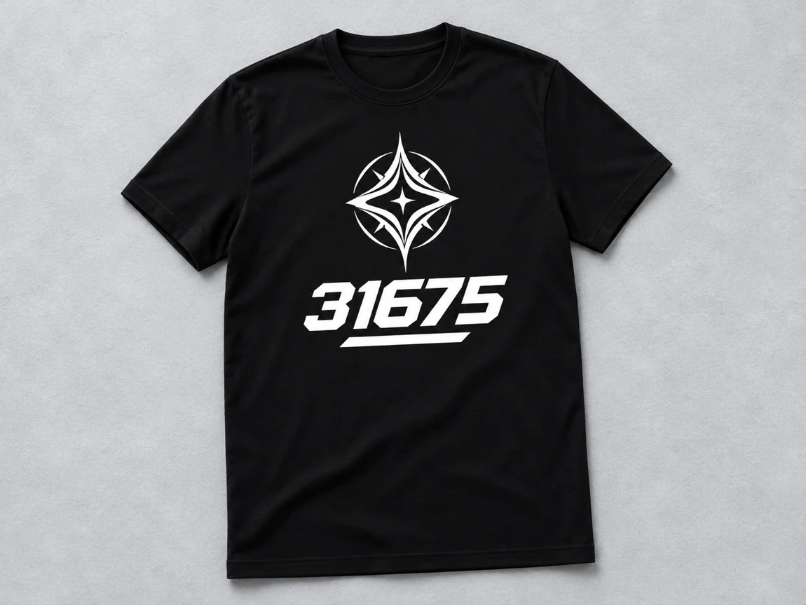

2026–27 season
BIOBUZZ
Our matches are in the Central Austin Robotics League. Find meet dates, venues and results on our season page.
Competition scheduleFIRST Tech Challenge Team 31675
We’re a student robotics team at the Islamic Center of Brushy Creek in Cedar Park, Texas.
Meet our team
2026–27 season
Our matches are in the Central Austin Robotics League. Find meet dates, venues and results on our season page.
Competition scheduleEngineering
One of our students designed an intake in Onshape. Two flexible wheels pull a ball up a ramp and into the robot.
Read the design notes